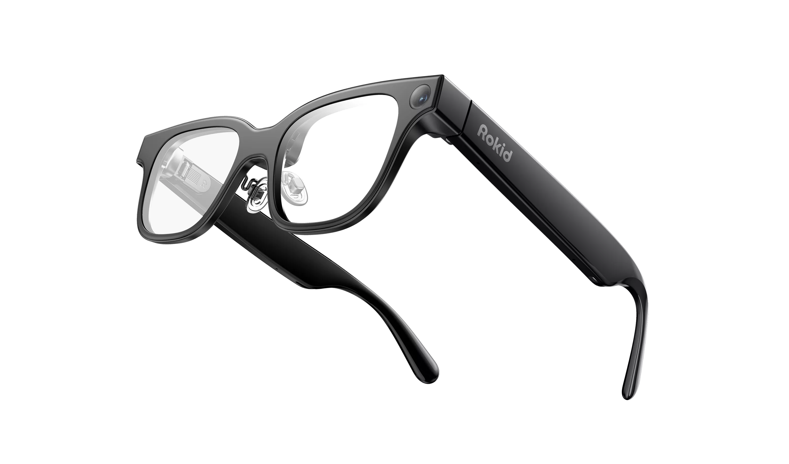
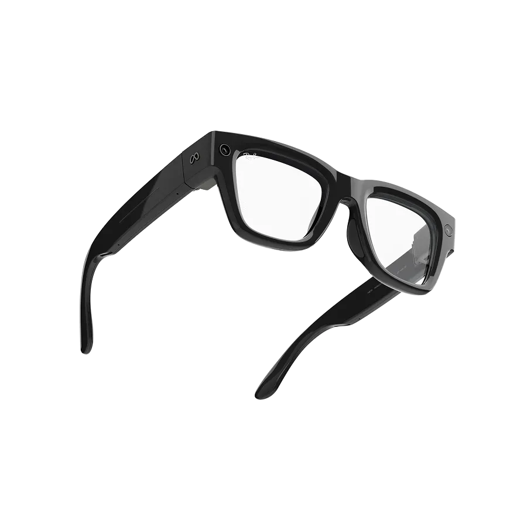
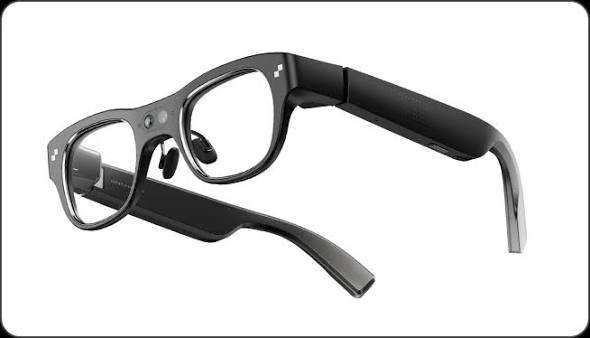
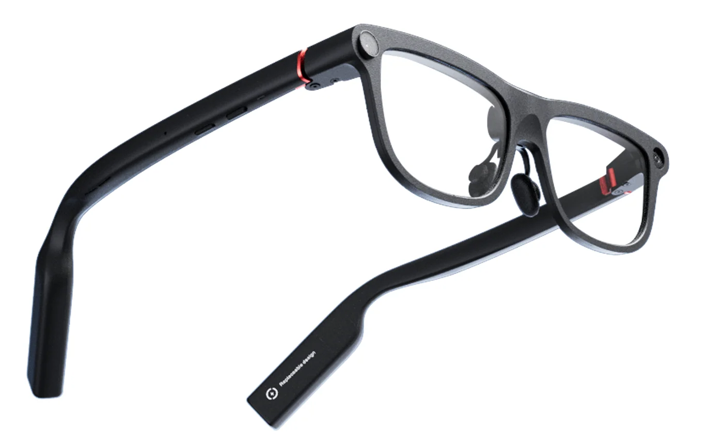
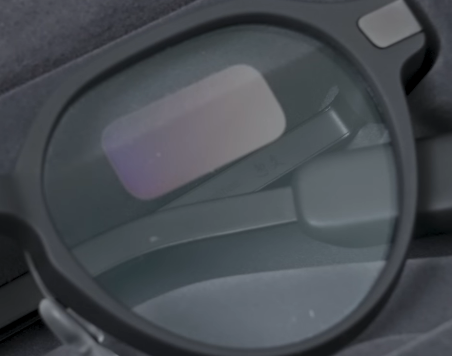
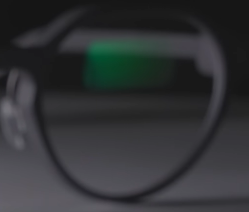
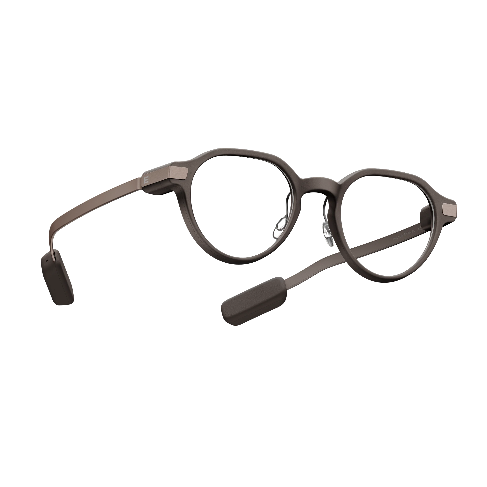

https://www.dogdrip.net/730824546
여기에서 무슨 안경테가 얇고, 카메라 렌즈도 없는 AI 안경들이 나와서 수능 시험장에서 어떻게 구분하냐고 하는데...
"카메라가 없는데 시험 문제를 어떻게 읽고 문제를 풀어주냐" 이건 넘어가자.
기술도 모르면서 설레발 치는 건 하루 이틀도 아니니까.
일단, 국내에서 구할 수 있고, 사용 가능하고, 문제 풀이도 해줄 수 있는 애들을 꼽아보면
ROKID Glasses AI, Meta Ray-Ban Display, RayNeo X3 Pro, INMO Go 3
정도 꼽을 수 있다.
물론 전세계, 특히 중국에서 수도 없이 많은 AI 안경들을 쏟아내고 있지만 나머진 안경이라고 하기도 민망하게 생겼고, 안경 같이 생긴 중국발 스마트 안경들은 글로벌 버전이 아닌 중국 내수용일 경우 중국 폰에만 연동 된다.
(내가 직구로 이거저거 샀다가 대부분 박스포장한 채로 내버려 두는 이유임)
즉 한국에서 쓸 수 있는 모델이 극히 한정되기 때문에, 저 모델들 외형만 외워도 된다.

ROKID AI 글래스

Meta Ray-Ban Display

RayNeo X3 Pro

INMO Go 3
공통적으로 카메라가 잘 보인다. 진짜 ㅈㄴ 잘 보인다. 이걸 못 보는 건 말이 안 된다.
심지어 INMO Go 3를 제외하면 안경 다리도 부자연스럽게 두껍다.
만에 하나, 카메라를 못 봤다고 치자.
저 안경들은 공통적으로 "웨이브가이드" 라는 걸 쓴다. 웨이브가이드가 뭔지는 중요치 않고, 웨이브가이드로서 동작하기 위해 렌즈 표면에 "커플러"라는 걸 붙이게 되는데,

이렇게 부자연스러운 경계가 보인다.(참고로 Meta Ray-Ban Display는 구조가 달라서 잘 안 보임)

심지어 조명이 비춰지면 이렇게 색도 튄다.
그리고 동작 중엔 이렇게 보인다.
눈 주변에 초록색으로 비춰진 게 보이나? 웨이브가이드에서 나온 빛들이 저렇게 눈 주변을 비춘다. 참고로 저 빛은 눈 쪽으로만 나오는 게 아니라 반대편으로도 나오기 때문에, 착용하고 책상을 보고 있으면 책상 쪽도 초록색으로 비춰진다.
에이, 학생 한 명 한 명마다 안경에 저런 게 있는지, 초록색으로 빛나는지 볼 수는 없지 않냐고?
문제 풀 때마다 이렇게 안경다리 터치하는 새끼 잡아내면 된다. 왜냐하면 터치 패드 넣을 공간이 안경 다리 밖에 없거든.
참고로 Meta Ray-Ban Display는 사진 찍을 때마다 찰칵 소리가 난다. 바로 걸리겠지?

EVEN Realities G2라는 모델이 출시되고, 거의 안경에 가까운 외형으로 인해 전세계에서 각광 받으며 여러 제조사들이 벤치마킹해서 '카메라 빼고, 극단적으로 경량화 하고, 안경처럼 보이는' AI 안경을 만드는 게 트렌드인 건 맞다.
문제는, 카메라를 빼면 수능 문제는 누가 보고 풀어주냐는 거다.
결국 카메라가 있어야 하고, 카메라로 푼 답을 착용자에게 보여줄 수 있도록 렌즈에 구조물이 있어야 한다. 그리고 지금의 과학 기술 상, 이걸 안 보이게 할 수 있는 기업은 없다고 봐도 된다.
그러니까 "시험장에서 AI 안경을 못 잡아낸다"는 건 잘 모르는 기술에 대한 막연한 공포에 가깝다.
시판제품으로 예시 들면서 절대 못함 이러는거보다 어떤식으로 우회할수 있는지 생각하는게 예방에 도움이 될듯?